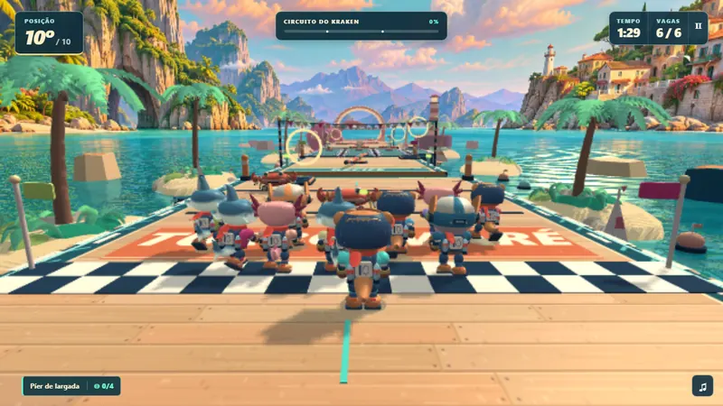
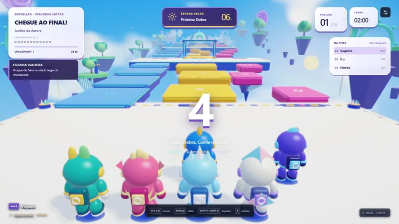
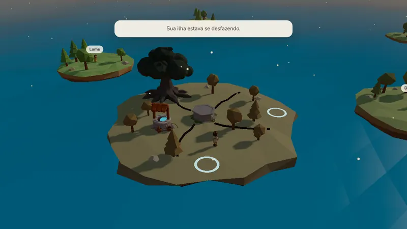

Turbo Maré
Copa das Marés
Do píer do Kraken ao topo do Farol. Três provas, um placar e até seis pilotos na mesma sala.
Farol da Ressaca Final da Copa
Catálogo
Escolha seu jogo



BetaCorrida PC (teclado)
Circuito das Fendas
Uma corrida de 120 segundos por um festival interdimensional.
 Protótipo
Protótipo